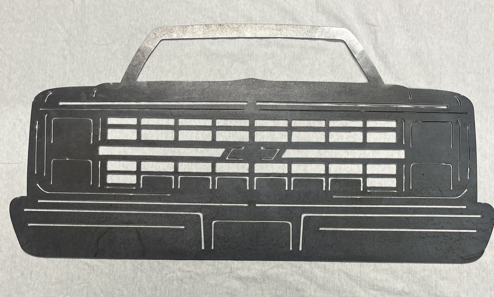
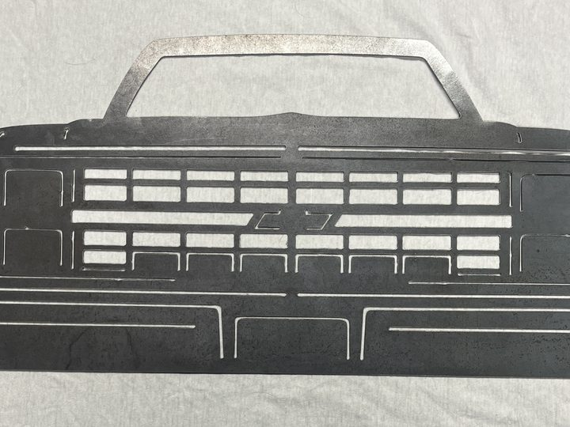
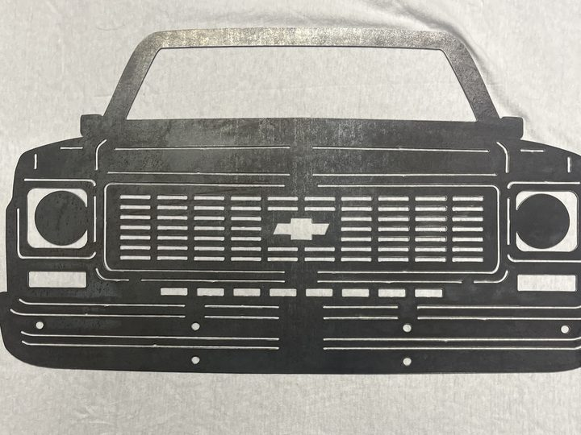
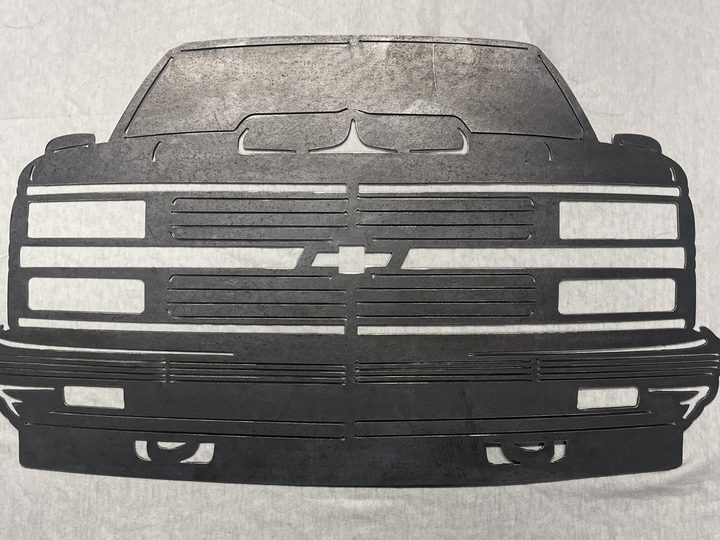
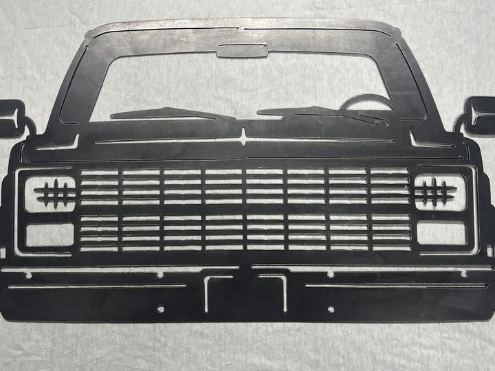
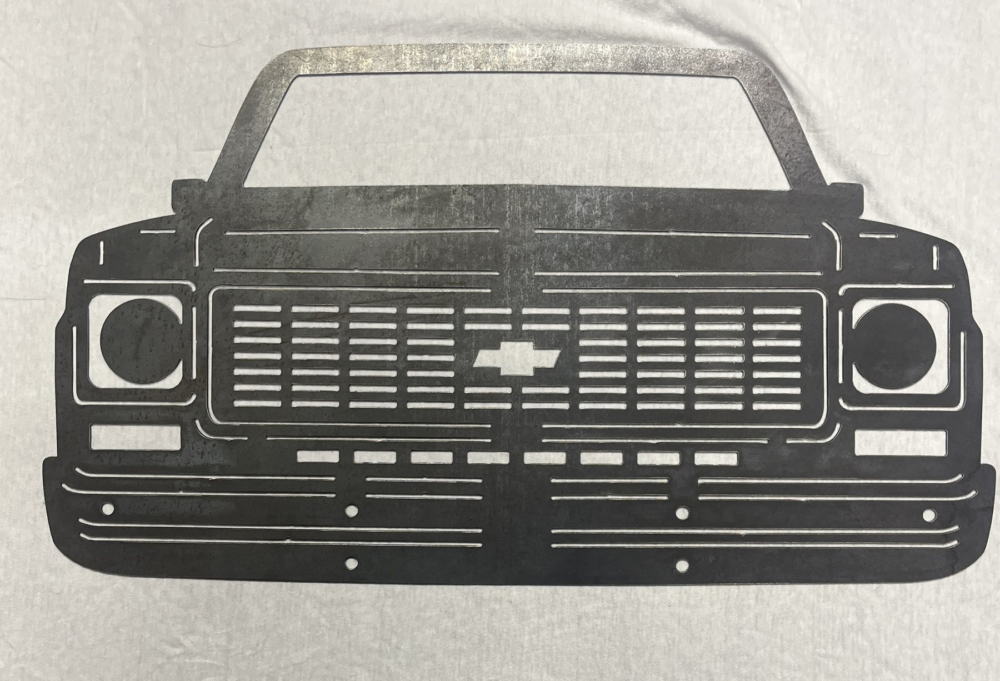
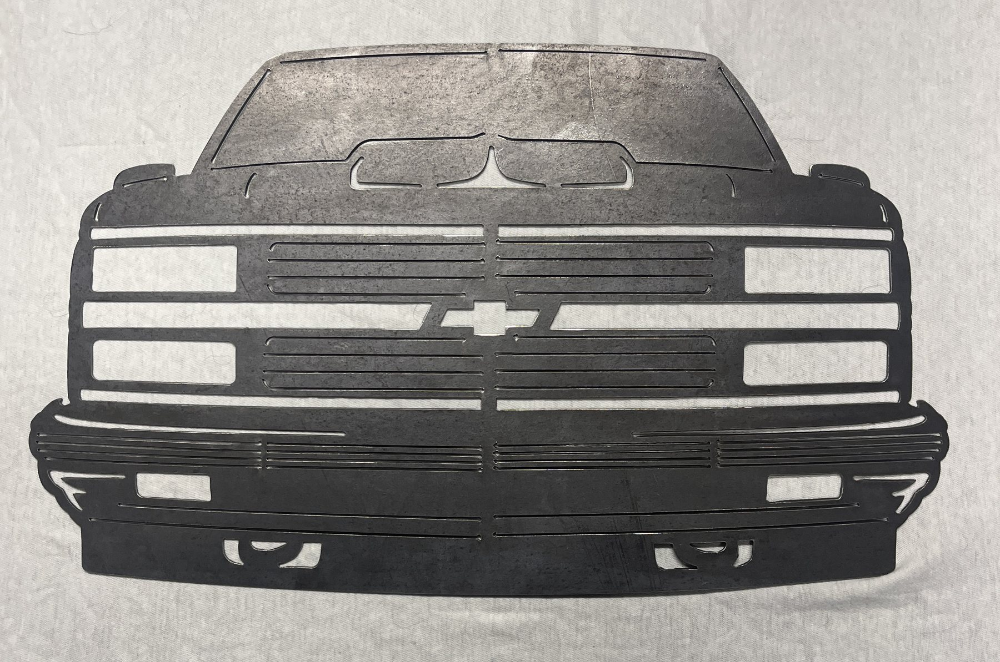
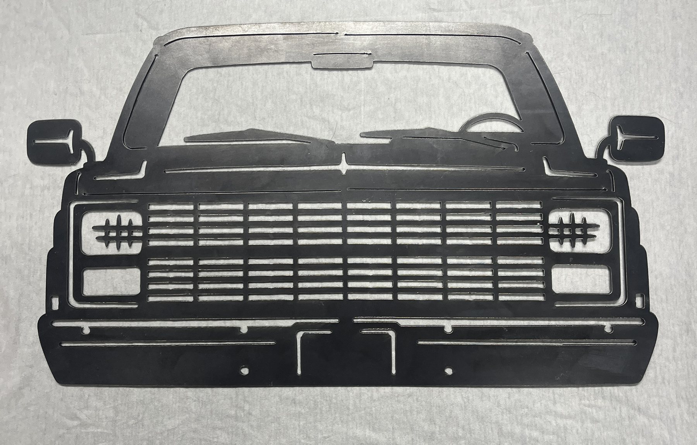

1981-1987 Chevrolet C10 Squarebody
Featuring the updated grille design used on later Squarebody trucks, this sign celebrates one of the most recognizable Chevrolet pickups ever built. Perfect for Squarebody owners and enthusiasts.
Custom plasma cut Chevy truck fronts and silhouettes for garages, shops, truck owners, and automotive gifts.
Request a Truck SignFrom Squarebody classics to OBS favorites, these plasma-cut steel signs celebrate some of the most iconic Chevrolet truck generations ever built.

C10 Front End
Squarebody Front
Classic Chevy
Truck Front
Featuring the updated grille design used on later Squarebody trucks, this sign celebrates one of the most recognizable Chevrolet pickups ever built. Perfect for Squarebody owners and enthusiasts.

Inspired by the classic Chevrolet Squarebody grille, this steel sign captures the unmistakable front-end styling that made the C10 a truck icon. A great addition to any garage, shop, or collection dedicated to classic Chevy trucks.

Inspired by the refreshed OBS Chevrolet trucks of the mid-1990s, this design highlights the grille and headlight styling that remains a favorite among truck enthusiasts today.

Featuring the updated grille design used on later Squarebody trucks, this sign celebrates one of the most recognizable Chevrolet pickups ever built. Perfect for Squarebody owners and enthusiasts.